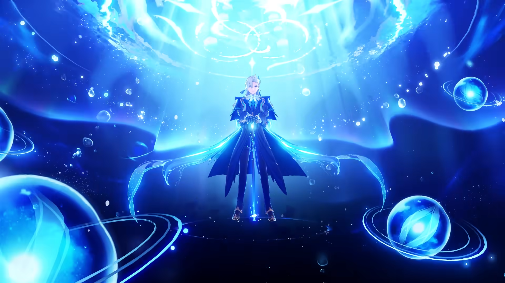
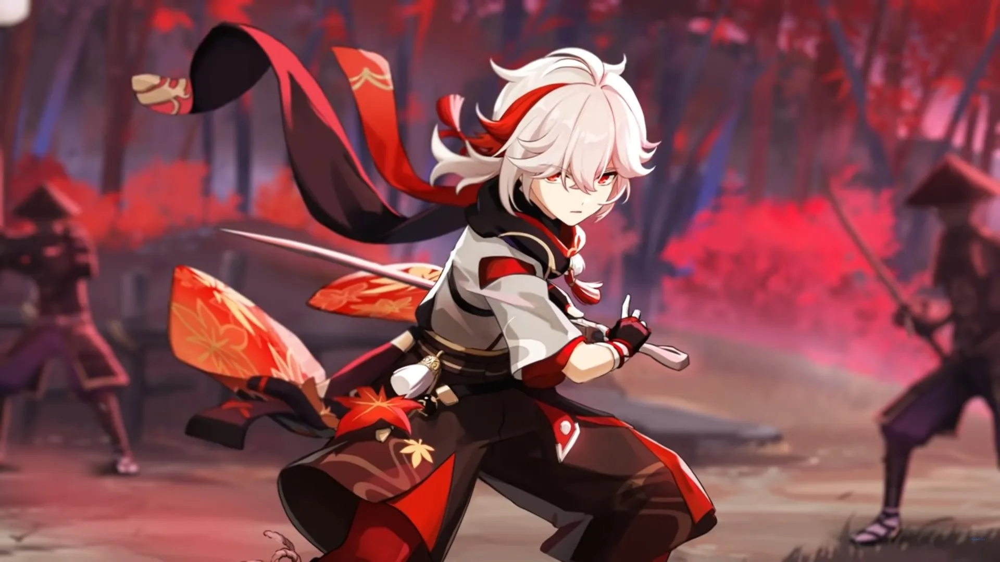
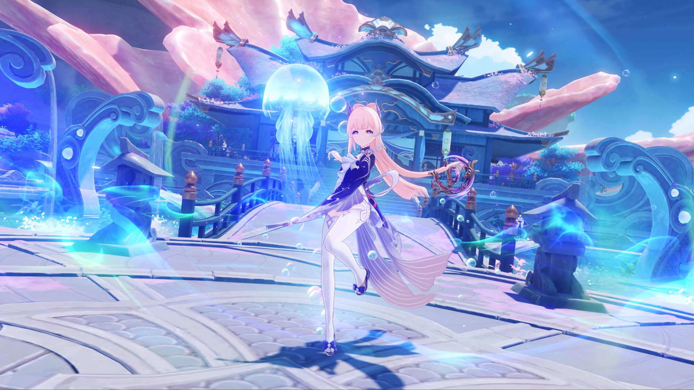

Poor team building skills and no dodging skills but still managed to 36 star abyss. Current favorite team: Navia, Bennett, Xiangling, Fischl (as suggested by my advisor, though I was his former advisor). Navia and Neuvillette skill hard carrying me (◔ ◡ ◔)
My favourite characters.

Bow your head.

Into the wind.

Rest and rebuild~
(Yet to come)
The past cannot be changed, and the future cannot be foretold. As a result, I make sure to always cherish the here and now.
-Cyno, a character I don't enjoy playing
Time to go!
Redeem codes for primogems by clicking that button right over there!